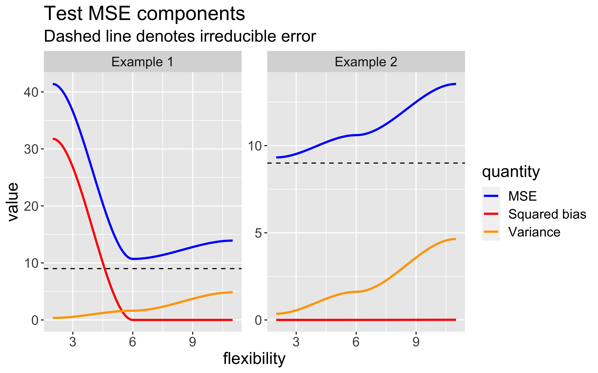

What is statistical learning?
Git and GitHub
Version control
Git is a version control system – like “Track Changes” features from Microsoft Word.
GitHub is the home for your Git-based projects on the internet (like DropBox but much better).
There are a lot of Git commands and very few people know them all. 99% of the time you will use git to add, commit, push, and pull.
We will be using the GitHub Desktop application to perform the Git commands in a beginner-friendly way. Our local project in RStudio will be sent to GitHub using the application.
Installation
- Accept the e-mailed GitHub invitation to join our course organization. If you did not receive an invitation, that means I do not have your GitHub username!
- Go to https://desktop.github.com/ and download the GitHub Desktop application.
- Continue following the instructions found here
Introduction
What is statistical learning?
Set of tools used to understand data
- Supervised and unsupervised methods
Use data and build appropriate functions (models) to try and perform inference and make predictions
Data-centered approach
Categories of statistical learning problems
- Classification
- Learning relationships
- Prediction
Supervised Learning
Notation: let \(i = 1,\ldots, n\) index the observation
For each observation \(i\), we have:
- Outcome/response: \(y_{i}\)
- Vector of \(p\) predictors/covariates: \(\mathbf{x}_{i} = (x_{i1}, x_{i2}, \ldots, x_{ip})'\)
Regression: the \(y_{i}\) are quantitative (e.g. height, price)
Classification: the \(y_{i}\) are categorical/qualitative (e.g. education level, diagnosis)
Goal: relate response \(y_{i}\) to the various predictors
Objectives in Supervised Learning
- Explanatory: understand which predictors affect the response, and how
- Prediction: accurately predict unobserved cases for new measurements of predictors
- Assessment: quantify the quality of our predictions and inference
Let’s look at some real data!
- Oribatid mite data: abundance data of 35 oribatid mite species observed at 70 sampling locations irregularly spaced within a study area of 2.6 × 10 m collected on the territory of the Station de biologie des Laurentides of Université de Montréal, Québec, Canada in June 1989
- Variables measured at each location:
Substrate density (quantitative)
Water content (quantitative)
Microtopography (binary categorical)
Shrub density (ordinal categorical, three levels)
Substrate type (nominal categorical, seven levels)
Sampling map
Brachy PHTH HPAV RARD SSTR Protopl MEGR MPRO TVIE HMIN HMIN2 NPRA TVEL ONOV
1 17 5 5 3 2 1 4 2 2 1 4 1 17 4
2 2 7 16 0 6 0 4 2 0 0 1 3 21 27
3 4 3 1 1 2 0 3 0 0 0 6 3 20 17
4 23 7 10 2 2 0 4 0 1 2 10 0 18 47
5 5 8 13 9 0 13 0 0 0 3 14 3 32 43
6 19 7 5 9 3 2 3 0 0 20 16 2 13 38
SUCT LCIL Oribatl1 Ceratoz1 PWIL Galumna1 Stgncrs2 HRUF Trhypch1 PPEL NCOR
1 9 50 3 1 1 8 0 0 0 0 0
2 12 138 6 0 1 3 9 1 1 1 2
3 10 89 3 0 2 1 8 0 3 0 2
4 17 108 10 1 0 1 2 1 2 1 3
5 27 5 1 0 5 2 1 0 1 0 0
6 39 3 5 0 1 1 8 0 4 0 1
SLAT FSET Lepidzts Eupelops Miniglmn LRUG PLAG2 Ceratoz3 Oppiminu Trimalc2
1 0 0 0 0 0 0 0 0 0 0
2 2 2 1 0 0 0 0 0 0 0
3 0 8 0 0 0 0 0 0 0 0
4 2 12 0 0 0 0 0 0 0 0
5 0 12 2 0 0 0 0 0 0 0
6 0 10 0 0 0 0 0 0 0 0 SubsDens WatrCont Substrate Shrub Topo
1 39.18 350.15 Sphagn1 Few Hummock
2 54.99 434.81 Litter Few Hummock
3 46.07 371.72 Interface Few Hummock
4 48.19 360.50 Sphagn1 Few Hummock
5 23.55 204.13 Sphagn1 Few Hummock
6 57.32 311.55 Sphagn1 Few HummockEDA
(scroll for more content)


Model building
Goal: predict
LRUGabundance using these variablesMaybe
LRUG\(\approx f(\)SubsDens+WatrCont\()\)?If so, how would we represent these variables using our notation? i.e., what are \(y_{i}\) and \(x_{i}\)?
Then our model can be written as \(y_{i} = f(x_{i}) + \epsilon_{i}\) where \(\epsilon_{i}\) represents random measurement error
What does this equation mean?
Why care about f?
Model (dropping the indices): \(Y = f(X) + \epsilon\)
The function \(f(X)\) represents the systematic information that \(X\) tells us about \(Y\).
If \(f\) is “good”, then we can make reliable predictions of \(Y\) at new points \(X = x\)
If \(f\) is “good”, then we can identify which components of \(X\) are important to explaining \(Y\)
- Depending on \(f\), we may be able to learn how each component \(X_{j}\) of \(X\) affects \(Y\)
Why care about f?
- We assume that \(f\) is fixed but unknown
- Goal of statistical learning: how to estimate \(f\)?
- Sub-goals: prediction and inference
- The sub-goal may affect the kind of \(f\) we choose
Prediction
We have a set of inputs or predictors \(X\), and we want to predict a corresponding \(Y\)
Assuming the error \(\epsilon\) is 0 on average, we can obtain predictions of \(Y\) as \[\hat{Y} = \hat{f}(X)\]
If we knew the true \(Y\), we could evaluate the accuracy of the prediction \(\hat{Y}\)
Generally, \(Y \neq \hat{Y}\). Why?
- \(\hat{f}\) will not be perfect estimate of \(f\)
- \(Y\) is a function of \(\epsilon\), which cannot be predicted using \(X\)
Types of error
Model: \(Y = f(X) + \epsilon\)
Irreducible error: \(\epsilon\)
- Even if we knew \(f\) perfectly, there is still some inherent variability
- \(\epsilon\) may also contained unmeasured variables that are not available to us
Reducible error: how far \(\hat{f}\) is from the true \(f\)
Prediction errors
- Ways to quantify error
- Difference/error = \(Y - \hat{Y}\)
- Absolute error = \(|Y - \hat{Y}|\)
- Squared error = \((Y - \hat{Y})^2\)
- Intuitively, large error indicates worse prediction
Prediction errors
Given \(\hat{f}\) and \(X\), we can obtain a prediction \(\hat{Y} = \hat{f}(X)\) for \(Y\)
Mean-squared prediction error: \[\begin{align*} \mathsf{E}[(Y - \hat{Y})^2] &= \mathsf{E}[( f(X) + \epsilon - \hat{f}(X))^2] \\ &= \underbrace{[f(X) - \hat{f}(X)]^2}_\text{reducible} + \underbrace{\text{Var}(\epsilon)}_\text{irreducible} \end{align*}\]
We cannot do much to decrease the irreducible error
But we can potentially minimize the reducible error by choosing better \(\hat{f}\)!
Inference
- We are often interested in learning how \(Y\) and the \(X_{1}, \ldots, X_{p}\) are related or associated
- In this mindset, we want to estimate \(f\) to learn the relationships, rather than obtain a \(\hat{Y}\)
Prediction vs Inference
In the prediction setting, estimate \(\hat{f}\) for the purpose of \(\hat{Y}\) and \(Y\).
In the inference setting, estimate \(\hat{f}\) for the purpose of \(X\) and \(Y\)
Some problems will call for prediction, inference, or both
To what extent is
LRUGabundance associated withmicrotopography?Given a specific land profile, how many
LRUGmites would we expect there to be?
Assessing model accuracy
No single method or choice of \(f\) is superior over all possible data sets
Prediction accuracy vs. interpretability
More restrictive models may be easier to interpret (better for inference)
Good fit vs. over- or under-fit
Parsimony vs. black box
- A simpler model is often preferred over a very complex one
Assessing model accuracy
How can we know how well a chosen \(\hat{f}\) is performing?
In regression setting, we often use mean squared error (MSE)
- \(\text{MSE}=\frac{1}{n}\sum_{i=1}^{n}(y_{i}-\hat{f}(x_{i}))^2\)
MSE will be small if predictions \(\hat{y}_{i} = {f}(x_{i})\) are very close to the true \(y_{i}\)
Training vs. test data
In practice, we split our data into training and test sets
- Training set is used to fit the model
- Test set is used to assess model fit
We are often most interested in accuracy of our predictions when applying the method to previously unseen data. Why?
We can compute the MSE for the training and test data respectively
Example 1
Example 2
Bias-Variance trade-off
As model flexibility increases, the training MSE will decrease but test MSE may not.
Flexible models may overfit the data, which leads to low train MSE and high test MSE
- The supposed patterns in train data do not exist in test data
Let us consider a test observation \((x_{0}, y_{0})\).
The expected test MSE for given \(x_{0}\) can be decomposed as follows:
\(\mathsf{E}[(y_{0} - \hat{f}(x_{0}))^2] = \text{Var}(\hat{f}(x_{0})) + [\text{Bias}(\hat{f}(x_{0}))]^2 + \text{Var}(\epsilon)\)
\(\text{Bias}(\hat{f}(x_{0})) = \mathsf{E}[\hat{f}(x_{0})] - \hat{f}(x_{0})\)
Bias-Variance trade-off (cont.)

Classification
Up until now, we have focused on quantitative responses \(y_{i}\)
What happens when \(y_{i}\) is qualitative? Examples include:
Medical diagnosis: \(\mathcal{C} = \{\text{yes}, \text{no}\}\)
Education level: \(\mathcal{C} = \{\text{high school}, \text{college}, \text{graduate}\}\)
Each category in \(\mathcal{C}\) is also known as a label
In this setting, we want our model to be classifier, i.e. given predictors \(X\), predict a label from the pool of all possible categories \(\mathcal{C}\)
Classification
We will still have to estimate \(f\)
\(\hat{y}_{i}\) is the predicted class label for observation \(i\) using estimate \(\hat{f}\)
How to assess model accuracy? Error is more intuitive: we make an error if we predict the incorrect label, and no error otherwise
This can be represented using an indicator variable or function. \(\mathbf{I}(y_{i} = \hat{y}_{i})\):
- \[\mathbf{I}(y_{i} = \hat{y}_{i}) = \begin{cases} 1 & \text{ if } y_{i} = \hat{y}_{i}\\ 0 & \text{ if } y_{i} \neq \hat{y}_{i} \end{cases}\]
Classification error rate
To quantify accuracy of estimated classifier \(\hat{f}\), can calculate the error rate, which is the proportion of mistakes we make in labeling:
- \[\frac{1}{n} \sum_{i=1}^{n} \mathbf{I}(y_{i} \neq \hat{y}_{i})\]
Small error rate is preferred
As with MSE, can calculate the error rate for train and test data sets
Classifiers
How do we choose which label to predict for a given observation?
Assume we have a total of \(J\) possible labels in \(\mathcal{C}\)
For a given observation \(i\), can calculate the following probability for each possible label \(j\): \[p_{ij}(x_{i}) = Pr(y_{i} = j | X = x_{i})\]
These probabilities are called conditional class probabilities at \(x_{i}\)
Bayes optimal classifier
The Bayes optimal classifier will assign/predict the label which has the largest conditional class probability
- It can be shown that the test error rate \(\frac{1}{n_{test}} \sum_{i=1}^{n_{test}} \mathbf{I}(y_{i} \neq \hat{y}_{i})\) is minimized when using the Bayes optimal classifier
For example, consider a binary problem with levels “yes” and “no”.
For observation \(i\), if \(Pr(y_{i} = \text{yes} | X = x_{i}) > 0.5\), then \(\hat{y}_{i} =\) “yes”.
The \(x_{i}\) where \(Pr(y_{i} = \text{yes} | X = x_{i}) = Pr(y_{i} = \text{no} | X = x_{i})= 0.5\) is called the Bayes decision boundary
Example
Classification in practice
Bayes classifier is “gold standard”
In practice, we cannot compute the \(p_{ij}(x_{i})\) exactly because we do know the conditional distribution of \(y\) given \(x\)
Instead, we need to estimate these \(p_{ij}(x_{i})\)
Almost all of our choices of \(\hat{f}\) will output these estimates